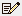

The track controls display trajectory data sets, e.g., aircraft track, ship, buoys, etc. This data can be loaded in the General->Files/Directories chooser of the Data Sources tab of the Data Explorer, with the Data Type of Track files. You can display your data in the form of a chart, table, track, or as a Point Data Plot drawn in the Main Display window. The items in the Layer Controls for a Point Data plot are the same as the controls for displaying regular Point Data. If you are working with data for a lot of times, or have many parameters included with your data, you may be prompted to subset the point data. This gives you the option of only including the necessary fields to cut down on memory usage and time to display the data.
To draw a track in the Main Display window, select your field in the Fields panel, the Track Colored By Parameter display type, and hit Create Display. These same controls are utilized for the Trajectory Colored By Parameter display type. The track controls consist of two tabs, Layout and Times.
The Layout tab controls the appearance of the display:

Image 1: Layout Tab of the Track Controls Dialog
- Color Table - Shows the active color table and the associated high and low data values in the units of the display. As the mouse pointer is moved over the color bar, the value at a particular color is shown. Right click on the color bar or click on the button that displays the name of the Color Table to make modifications to the color bar. This allows you to open the Color Table Editor, change the range, select other color tables, etc.
- Visible Range - Determines
what parts of the data are actually shown. Click the
 button to set the range of data shown. Once the checkbox is checked, the Visible Range will be applied to the data in the Main Display window. If the Visible Range checkbox is not selected, the default range will be used.
button to set the range of data shown. Once the checkbox is checked, the Visible Range will be applied to the data in the Main Display window. If the Visible Range checkbox is not selected, the default range will be used. - Marker - Defines an end point symbol and text as well as its color with
these fields when using Nominal Time in the Times to Use option of the Times tab. If you select Track Times in the Times to Use option of the Times tab, then this point will represent the current location of the track as you play through the loop of data in the Main Display window. By default, "Location" is selected as the default
marker. Click the checkbox to the left of the "Location" box
to enable the marker. Click on "Location" to choose another marker
from the list of layouts. Click on the
 Edit icon
to edit a current layout, or to create a new one. Use the slider or enter
in a value and hit enter in the Scale option to set the
scale of the marker.
Edit icon
to edit a current layout, or to create a new one. Use the slider or enter
in a value and hit enter in the Scale option to set the
scale of the marker. - Line Width - Allows you to set the width of the displayed trajectory line. You can change the line width by typing a value into the field and pressing Enter, or by clicking
 to use a slider.
to use a slider.
The second tab controls the Times used for the display:
Image 2: Times Tab of the Track Controls Dialog
- Times to Use - Represents if you are using nominal times or the track times from the data. You can also choose to limit the times of data shown by checking enabled. There are two Times to Use options:
- Nominal Time - Displays the entire track of data in one time step, regardless of the number of observations along the track.
- Track Times - Displays the track as a series of time steps, from start to finish.
- Time Mode - Allows for the control of how much of the track is shown and from what time. Even though a track represents a set of observation times, there is not
time set defined for animating in the main display. Click  to show the Time Settings dialog. The time mode allows
for the control of how much of the track is shown at each time step of the loop:

Image 3: Time Settings DialogThis dialog allows you to define the time range to show of the track. The image above defines that the end time is the current animation time, and the start time is relative to the end time less 30 minutes. This means that the track or trajectory drawn in the Main Display window would include the current animation time of the loop, as well as the any data from 30 minutes prior this time.
This time setting is different that that used for the Define Animation Times tab of the Time Animation Widget since it has no influence on the number of time steps in the loop, but rather the amount of data shown at each time step. You can utilize the various options for Start Time and End Time to determine how much of the track or trajectory will be shown in each time step.
- Use First Time from Data - Begins plotting the track or trajectory of your data from the first time step of the data.
- From Animation Time - Begins plotting the track or trajectory of your data from the current timestep of the animation in the Main Display window.
- Relative to End Time - Begins plotting the track or trajectory of your data from a time relative to the End Time selected for your data. You must use an Offset with this to determine how far back (in terms of time) to be from the final time step. The Offset here should be a negative value assuming your loop is progressing forwards through time.
- Fixed (Start Time) - Begins plotting the track or trajectory of your data from a fixed time that will not change as your loop progresses. This does not affect the End Time of your data.
- Use Last Time from Data - Sets a time where your path or trajectory will end.
- Relative to Start Time - Stops the plotting of the the track or trajectory at a time relative to the Start Time selected for your data. You must use an Offset with this to determine how far in the future the End Time will be from the Start Time. The Offset here should be a positive value assuming your loop is progressing forwards through time.
- Offset - Sets the temporal offset (either positive or negative) from the value selected for Start Time or End Time. This option can be used with any of the provided choices for Start Time and End Time. The default is 0m, which means that the actual starting and ending times are what was selected.
Many of the menu items seen utilizing this display are standard options that can be found in the Menus section of the Layer Controls page. However, there is one item that is unique to this display.
The Edit menu has this unique option:
- Change Parameter... - Changes the parameter that the track or trajectory is colored by.
The View menu has this unique option:
- Show Flythrough - Opens the Flythrough feature which allows you to interactively explore the display.